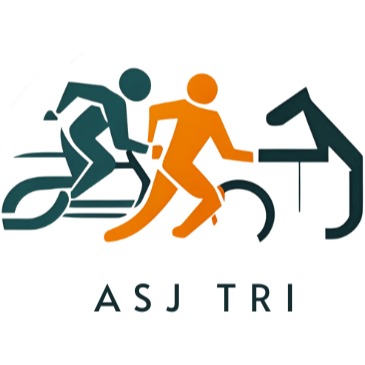

Mixed Team Relay — Wollongong Worlds
Four athletes, four mini-triathlons, and one big grin: how our improvised Team Canada III (X160) raced the Mixed Team Relay at the Wollongong World Championships.
Oct 19, 2025

Training, racing, and figuring out how to fit swim-bike-run around work, family, travel, and the usual chaos of normal life.
This is the front page for race reports, training notes, gear thoughts, and the longer story behind what it takes to keep showing up as an age-group athlete.
Chronological race stories, results, lessons learned, and galleries from triathlons, runs, swims, and the occasional surprise.
Longer reflections on preparation, age-group racing, kit, planning, and whatever did not fit neatly into a race report.
Structured race data with filters and lookup tools when you want the database view instead of the narrative version.
Personal bests, rankings, and performance snapshots across the different formats and distances.
This started as a way to keep race memories organized, but it has turned into something more useful: a record of how training, racing, work, travel, family life, and long-term progression actually fit together over time.
The goal is not just to post finish-line photos. It is to keep the stories, the numbers, and the lessons in one place.